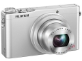

小巧轻便的XQ1采用一款全新开发的F1.8大光圈4倍光学变焦的镜头，并配有与X20相同的2/3英寸X-Trans TM CMOS II传感器和EXR 处理器 II，能够提供世界领先的0.06秒自动对焦速度。1200万像素的2/3英寸X-Trans CMOS II传感器可控制摩尔纹和伪色，无需光学低通滤镜。EXR 处理器II的处理速度是先前版本的一倍以上，因此可控制更多噪点并保持图像清晰度。感光度范围为ISO100至ISO12800，因此即使在弱光条件下，仍可以拍摄出自然清晰的图像。
偶用的是XQ2，因为无忌还没有挂网，就在XQ1这里评论一下。因为旅行之前把小奥借给同事去欧洲旅行了，路上没有一部能随手抓拍的轻巧相机又不是很方便（别跟俺提手机，虽然这次用小米拍的照片发说说已经秒杀iPhone 5，但跟相机比还是不入流），于是在出发前一天去富士专卖店入手了这台XQ2。之前有想过买松下LX7，尼康P340，以及索尼黑卡等，但逛到了富士专卖店，还是一眼就被这个小精灵给吸引住了，一问价格，不到二千块，且用的是大名鼎鼎的X-Trans CMOS II传感器，成像质量应该是有所保证的，当场试拍了几张感觉非常不错，就拿下了。回来整理照片时，发现近一半的照片是这个小家伙拍的，而且跟单反相机拍的放在一起几乎没有质量上的差别。好吧，从此对富士由路转粉了。
小巧，画质高，做工精致，有高级感。
最长曝光时间与感光度成反比，固然是为了画质，但有时不太方便。